このマスカットは11年も育てています。
2024/04/27
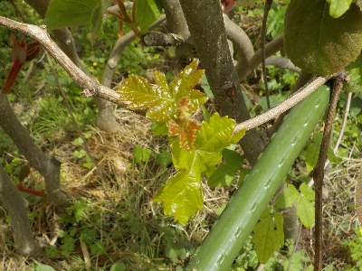
2012年に種蒔きしたマスカットです。枯れそうで枯れないでもう11年です。
もう実は期待していません。キウイとアケビの横で、枯れずにいてくれたらそれでいいです。
2024/04/27

2012年に種蒔きしたマスカットです。枯れそうで枯れないでもう11年です。
もう実は期待していません。キウイとアケビの横で、枯れずにいてくれたらそれでいいです。
2020/05/02
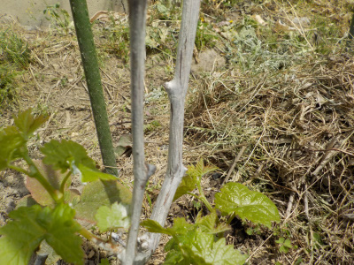
殺虫剤を塗っておくと蛾の被害が少ないそうです。
効果を期待しています。
2020/02/18
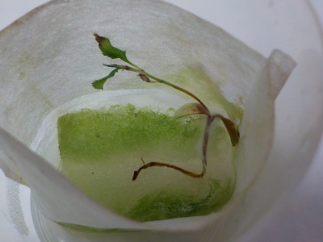
マスカットにカビが生えました。
枯れました。
1本だけだったので、とっても残念です。
ブドウは苗を買って育てた方がいいかなーなって少し思いましたが、苗を買って育てるんなら実を買って食べた方がいいかな。
また種を見つけたら育てようと思います。
2020/02/11
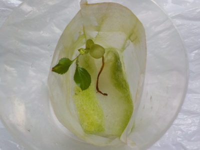
マスカットがちょっとしおれています。
近頃は成長している感じがありません。
屋内ですが、いつも暖かいわけではないのでしょうがないです。
今までもったので、春まで持ちこたえて欲しいです。
2019/12/28
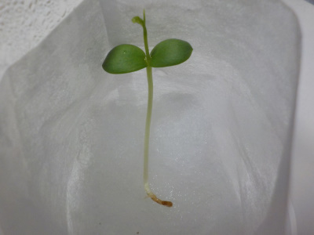
双葉の次が出てきました。
根っこがあまり伸びていないのが少し気になります。
2019/12/14
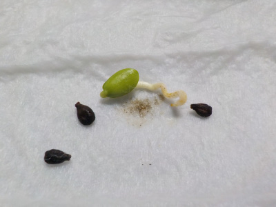
部屋の気温が暖かいせいか発芽しました。
外は寒いので、このまま部屋に置いた方がよさそうですね。
2019/11/13
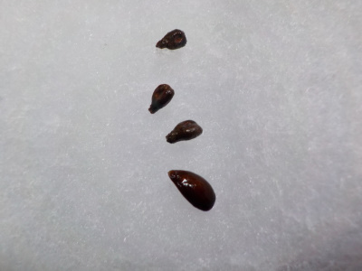
春に蒔こうと冷蔵庫に入れてたんですが、一部カビが生えたので蒔いてしまいました。
芽が出るかな？
2019/08/04
大きい虫が葉っぱを食べていました。
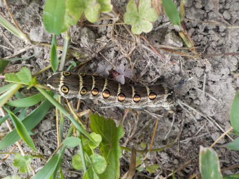
このサイズになるまで沢山葉っぱを食べたんだろうな。
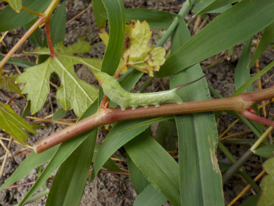
よく見たら、緑の小さいイモムシもいました。
こんなに虫が付くと思うと、ブドウを畑て大きくするのは無理かも。
ハウスとか鉢でバッチリ管理しないと駄目かな。
今年の冬に枯れたらプランターに植え替えるか、破棄しよう。
2019/04/07
ブドウから新芽が出ていません。3本あって3ほんとも枯れたみたいになっています。
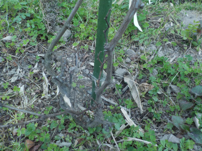
根本のほうには小さな芽っぽいのがあるんですが、今のところ成長してないです。
枝の上部は黒く乾燥しています。
冬の間に病気にでもなったのかな。
2018/07/01
何者かに葉っぱを食べられてしまいました。
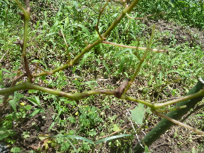
犯人は見つかりませんでした。
毎年食べられるのでなかなか成長しません。
2016/04/16
鉢植えをやめて地植えにしました。
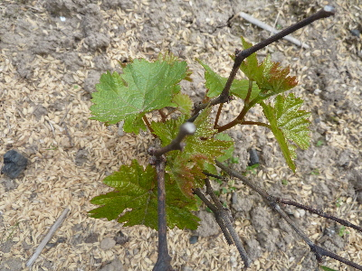
鉢は水やりが面倒です。
これで楽ちんかな？
たぶん成長も早いと思う。
2015/05/10
あんまりかまっていないですが、枯れずに育っています。
なんか手間を掛けた方がいいかな。
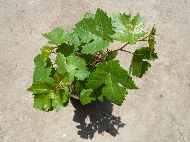
肥料とかあげようかな。
2014/04/26
去年の秋に葉っぱが落ちて、枯れたようになっていたマスカットから葉っぱが出てきました。
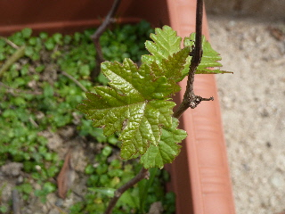
でも無事に復活したのは今のところ3本だけです。
全滅しないように、大事に育てたいです。
2013/08/17
マスカットに限ったことではないですが、果樹って成長があんまり早くない気がします。
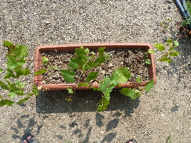
ひょろひょろとした木が只今7本育っています。
14本が半減してますね。
夏の暑さのせいか、葉っぱが青々してないです。
これってちゃんと育つのかなー？
2013/05/25
マスカットをプランターに植え替えました。
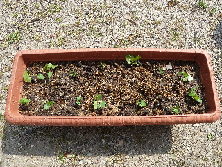
ちょっと大き目のプランターに14本も植えました。
多過ぎですね。
でもきっと何本かは枯れちゃうと思うので、植えちゃいました。
何本育つかな？
2013/05/18
温かくなったら続々発芽しました。
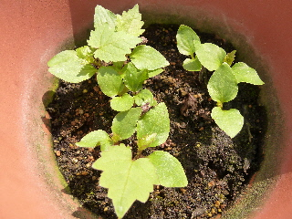
最初に芽が出たのは、もうギザギザの葡萄らしい葉っぱがでましたね。
このままだと窮屈なので、植え替えをしないといけませんね。
大きめのプランターに並べて植えようかな。
2013/05/03
春になっても芽が出ないので、今年も失敗したって思っていたんですが、今頃芽が出ました。
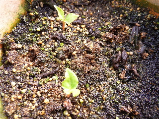
あきらめて鉢を整理しなくて良かったです。
気温がだいぶ上がらないと発芽しないものなんですね。種を沢山まいたはずなので、これからドンドン芽が出てくるのかな？
2012/10/08
正しい名前は分からないですが、
緑色で、ぶどうの皮を食べない品種で、種ありの葡萄の種です。
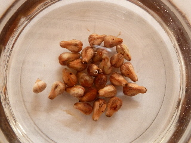
マスカットって事にします。
今日鉢に植えました。以前にも葡萄の種を蒔いたことがあるんですが、失敗したので多目にしました。
順調にいけば春に芽が出ると思います。
それまで土が乾燥しないように、管理に気を付けようと思います。
畑仕事じゃないよ。